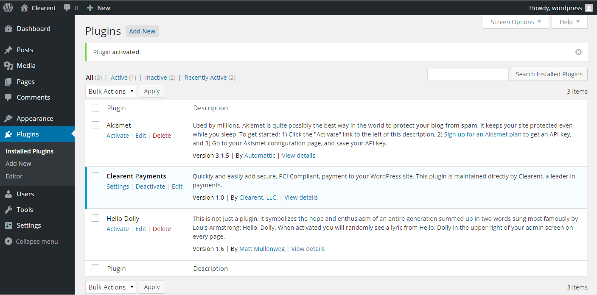

Clearent WordPress Plugin
Documentation and examples
Security Requirements
- Your WordPress site must use HTTPS.
- Do not publish your API Key or share it with anyone.
- Never store or displayed non-encrypted card data anywhere on your site.
Installation
Installing via WordPress Dashboard
- Navigate to "Plugins" -> Click "Add New" button
- Search for 'Clearent Payments'
- Click "Install Now"
- Click the "Activate Plugin" link
Uploading via WordPress Dashboard
- Navigate to "Plugins" -> Click "Add New" button
- Click the "Upload Plugin" button
- Browse to the clearent-payments.zip download location on your computer
- Click "Install Now"
- Click the "Activate Plugin" link
- Contact Clearent to request sandbox api key for testing and production key for live sales.
Configuration
Settings
On the plugins page, click the Settings link for the Clearent Payments plugin.
This will take you to the settings page for the Clearent Payments plugin.
- Environment: By default, the Clearent Payments plugin will perform all transactions against the production environment.
The plugin may be switched to sandbox environment for testing purposes.
- Sandbox: You can run test transactions in Sandbox mode to verify your pages work, successful transactions are logged and the user is directed to your success page when the transaction is complete.
- Production: This mode uses your life API key to run real transactions in your production environment.
- Success URL: This dropdown will list all of the pages on your site. You can choose a page to redirect your users to after a successful transactions. If no pages is specified the user is redirected to the site's homepage.
- API Keys: Contact Clearent to request sandbox api key for
testing and production key for live sales.
- Sandbox API Key: This key is used to run test transactions when the environment is set to Sandbox mode. This key will not work in Production mode.
- Production API Key: This key is used to run live transactions when the environment is set to Production mode. This key will not work in Sandbox mode.
- Debug Logging: This tool can be used to help diagnose issues when using the plugin. It may also be used to help diagnose
production issues after your site has been deployed. When debugging is enabled, the debug log is created at:
/[plugin directory location]/clearent-payments/log/debug.log- Disabled: (default) Debug logging is turned off.
- Enabled: Debug logging is turned on.
Transaction History
The transaction history tab lists successful transactions in the last 90 days. Most recent transactions are listed first. You can do advanced searching and querying of past transactions using Clearent's Virtual Terminal. Your Clearent representative can help you get started using our Virtual Terminal.

When you click on a transaction in the list you will get a popup with additional transaction details including all information captured during the transaction.
Pages Using Plugin
The "Pages Using Plugin" tab is provided to help you quickly identify pages in your site using the Clearent Payments plugin. All pages using the plugin are listed as links what will take you directly to the respective pages.
Plugin Updates
You will see a notification icon in your WordPress admin dashboard when a plugin update is available.
You will see an "Updated!" message when the plugin has been successfully updated.
To stay current with the latest security updates, it is recommended to keep your Clearent Payments plugin updated. You can click on the "View version x.x details" link to see more information about the update. Click the "update now" link to update the plugin.
Browser Support
Clearent’s WordPress Plugin will work with Chrome, Firefox, Safari, and IE10 and higher. It has been designed to work on desktops, notebooks, tablets, and mobile devices.
Troubleshooting
Error messages for this solution are generic for security purposes as these errors are presented directly to the end user. The exchange ID of each request in logged in the transaction log (see above). Provide this ID to Clearent if you need help debugging failed transaction errors.
Example Exchange ID from transaction log: ID-CLASBDKRGW01-cgw01-41232-1446575925523-0-2261
Additionally, debug logging (described above) may be turned out to help diagnose issues when developing and testing this plugin with your site's pages.